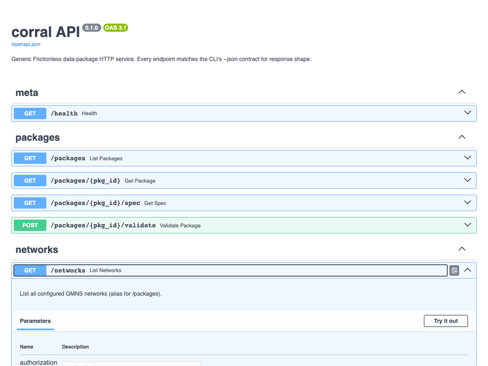

Self-host the HTTP server ¶
When to use this ¶
You want HTTP access to your GMNS networks — for dashboards, non-Python consumers, or a small team sharing a single curated set of packages. The server is read-only: it serves metadata, the resolved spec, validation reports and quality reports, never edits.
Quick example ¶
Write a minimal config that binds localhost on port 8000, requires a bearer token, and exposes one package. Start it with netstead server run:
# server.yaml
bind: 127.0.0.1
port: 8000
auth:
kind: bearer
token: "paste-the-output-of-generate_dev_token-here"
packages:
- id: leavenworth
source: packages/netstead/netstead/fixtures/leavenworth/csv
Expected:
/docs — every endpoint with try-it-out forms and the JSON response schema.

Step-by-step ¶
1. Install the [server] extra ¶
[server] brings in FastAPI, uvicorn and pydantic-settings. Add [graph] as well if you want /networks/{id}/quality — the GMNS rule pack’s connectivity rule needs scipy:
2. Generate a dev token ¶
generate_dev_token() returns one URL-safe random string (secrets.token_urlsafe(32)). The same string goes into the config and into every client’s Authorization header — the server stores it as given, it does not hash it:
Expected (yours will differ):
Paste it into auth.token in your config and keep it with the same care as any other shared secret.
3. Write a config YAML ¶
A config is one ServerSettings document (corral.api.config): bind, port, an auth block and a packages list. Each package has a URL-safe id, a source that Network.from_source accepts, and an optional description echoed by /networks. There are no per-package engine or spec-version keys and no logging section — the spec version is detected from the data, and logging is uvicorn’s:
# server.yaml
bind: 127.0.0.1 # 0.0.0.0 to accept off-host requests (see pitfalls)
port: 8000
auth:
kind: bearer # or "none" — see pitfalls
token: "paste-the-output-of-generate_dev_token-here"
packages:
- id: leavenworth
source: packages/netstead/netstead/fixtures/leavenworth/csv
description: Bundled Leavenworth, WA fixture (GMNS 0.97)
- id: regional
source: s3://my-bucket/regional/datapackage.json
JSON works too (--config server.json). YAML parsing uses pyyaml, which uvicorn[standard] (part of the [server] extra) already installs.
4. Run it + verify ¶
Start the server, then hit /health (the unauthenticated liveness probe) to confirm it’s up. --bind / --port override the config for a one-off run:
Expected:
5. Make authenticated requests ¶
Pass the token from step 2 as a bearer header. Every response is JSON, whatever Accept header the client sends. /networks is the cheap listing — it echoes the config without loading anything:
TOKEN="paste-the-output-of-generate_dev_token-here"
curl -H "Authorization: Bearer $TOKEN" http://127.0.0.1:8000/networks
Expected:
[{"id": "leavenworth", "source": "packages/netstead/netstead/fixtures/leavenworth/csv", "description": "Bundled Leavenworth, WA fixture (GMNS 0.97)"}]
Counts and the spec version are on the per-network endpoint, which loads the package on first access:
Expected:
{"id": "leavenworth", "name": "gmns", "spec_version": "0.97", "engine": "IbisEngine", "links": 339, "nodes": 121, "table_count": 9, "tables": ["geometry", "lane", "link", "link_tod", "node", "signal_controller", "time_set_definitions", "use_definition", "use_group"]}
Quality checks are a POST (a GET returns 405 Method Not Allowed). The body is the same ValidationReport.to_dict() shape the CLI’s --json emits:
6. Endpoint list ¶
| Endpoint | Returns |
|---|---|
GET /health |
{"status": "ok"} (no auth) |
GET /packages |
[{id, source, description}] — configured packages, nothing loaded |
GET /packages/{id} |
{id, name, engine, table_count, tables: [{name, rows, columns}]} |
GET /packages/{id}/spec |
resolved Frictionless datapackage.json |
POST /packages/{id}/validate |
full validation report (ValidationReport.to_dict()); packages are loaded as Networks, so this is GMNS validation with spec_version set |
GET /networks |
same listing as /packages |
GET /networks/{id} |
{id, name, spec_version, engine, links, nodes, table_count, tables} |
POST /networks/{id}/quality |
the GMNS rule pack as a validation report (needs [graph]) |
Interactive OpenAPI at http://127.0.0.1:8000/docs.
Common variations ¶
Default — localhost bind with bearer auth
Safe default for dev and single-host production behind a reverse proxy.
Off-host access (LAN, etc.)
Bind 0.0.0.0 — but keep auth on.
Behind nginx / Caddy
Bind to 127.0.0.1; let the proxy terminate TLS and forward. No server-side TLS config needed.
One token per client
The config holds exactly one auth.token. To give each client its own credential, run one server process (and config) per client, or put an authenticating reverse proxy in front and let it hold the per-client secrets.
Disable auth (dev only)
The server still starts on a public bind with kind: none — it only logs a warning (see pitfalls) — so pair this with a localhost bind.
Docker
The repo ships a server image definition at packages/netstead/Dockerfile (plus docker-compose.example.yml beside it). Build it from the repo root — the build needs both workspace packages — and mount your config and data:
docker build -f packages/netstead/Dockerfile -t netstead-server .
docker run --rm -p 8000:8000 \
-v $(pwd)/server.yaml:/etc/netstead/config.yml:ro \
-v $(pwd)/data:/data:ro \
netstead-server
A prebuilt ghcr.io image is not published yet (tracked in #104). Alternatively, pip install into your own image and copy the config alongside:
Pitfalls ¶
auth.kind: none+ non-localhost bind is a security footgun. The server logs acorral.api: auth.kind='none' with bind='0.0.0.0' exposes the server with NO authenticationwarning at startup and then runs anyway — there is no refuse-to-start guard and no override key. Treat the warning as a stop sign.- Bearer mode needs a token.
kind: bearerwithoutauth.tokenfails at app build time (AuthSettings(kind='bearer') requires token to be set), so a misconfigured server never silently lets requests through. - Tokens are compared in constant time, as plaintext. The server holds the token string from the config and checks the incoming
Authorization: Bearer …header against it withhmac.compare_digest. There is no hashing — protect the config file as you would the token itself. - Packages are cached after first load. The
PackageRegistryloads each package throughNetwork.from_sourcethe first time its id is requested and keeps it for the life of the process. Edit the files on disk, or the config, and you need to restart the server to see the change. - No write endpoints. The HTTP server is read-only by design. For editing, use the Python API +
Session, or the Workbench.
See also ¶
- Wire the MCP server to Claude Code / Claude Desktop — same data, stdio transport.
- MCP tools reference — what the MCP surface exposes.
- corral API reference —
corral.api.ServerSettings,AuthSettings,PackageRef,generate_dev_token,load_settings.